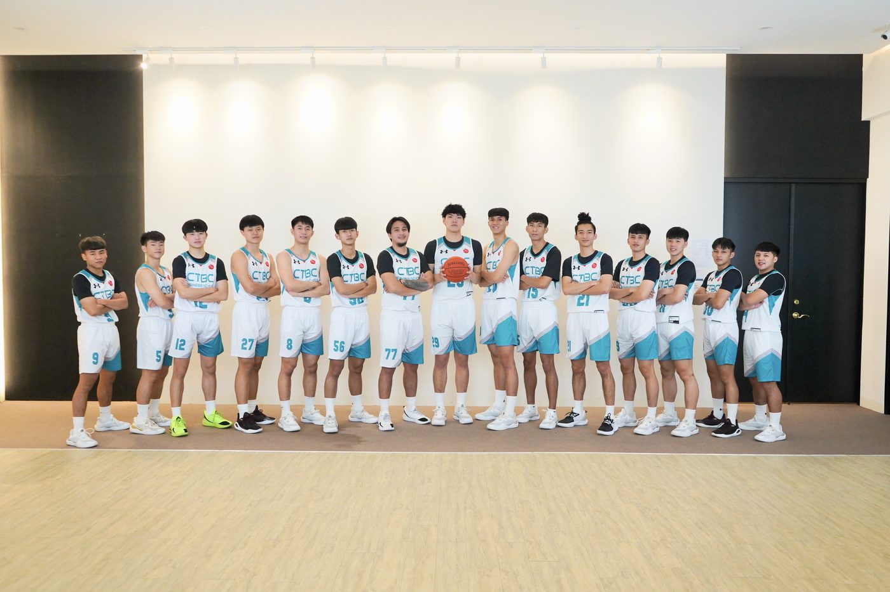
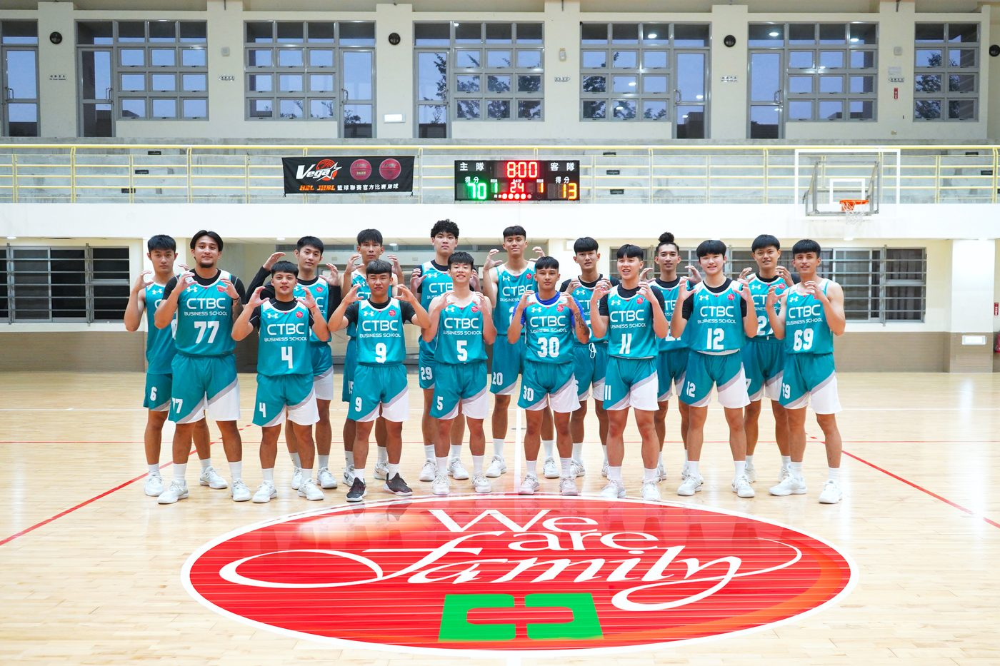

01我的故事
我們是中信金融管理學院籃球隊，一支結合速度、熱情與團隊精神的年輕隊伍！💪
✨ 我們的特色：
✅ 嚴謹訓練 — 結合體能、技術與戰術，全面提升球員實力。
✅ 團隊合作 — 強調場上彼此支援、場下互相鼓勵。
✅ 挑戰自我 — 積極參加各項校際與公開賽事，累積實戰經驗。
熱血青春、團隊合作，挑戰自我！
在球場揮灑汗水，展現中信驕傲！💙


推薦理由
1.專業訓練體系：結合體能、技術、戰術與心理素質培養，讓球員全面發展。
2.堅強教練與後勤團隊：教練具備豐富比賽與培訓經驗，並有防護師、心理師、數據分析支援。
3.國內外實戰舞台：積極參與國內聯賽與盃賽，並與亞洲、歐美球隊交流，提升國際視野。
4.重視學業與運動平衡：球員兼顧學業，培養金融專業與運動精神的雙重能力。
5.團隊精神與人脈養成：球隊強調「合作、紀律、挑戰」，建立終身受用的人脈與品格。
6.校園品牌代表：籃球隊是中信金融管理學院的亮點，凝聚師生向心力，提升學校形象。
總結：
「加入中信金融管理學院籃球隊，不只是在球場上成長，更是在人生路上培養專業、毅力與團隊精神！」